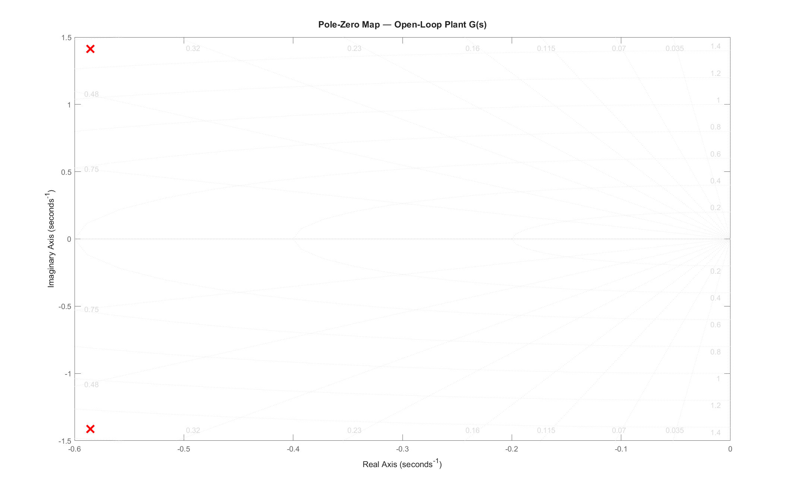
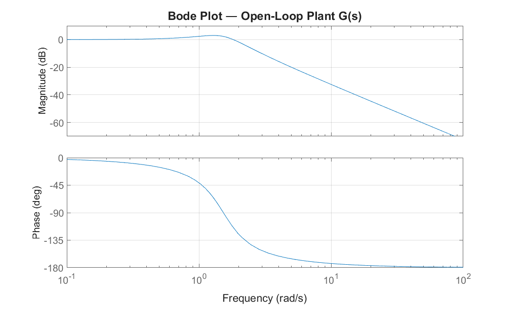
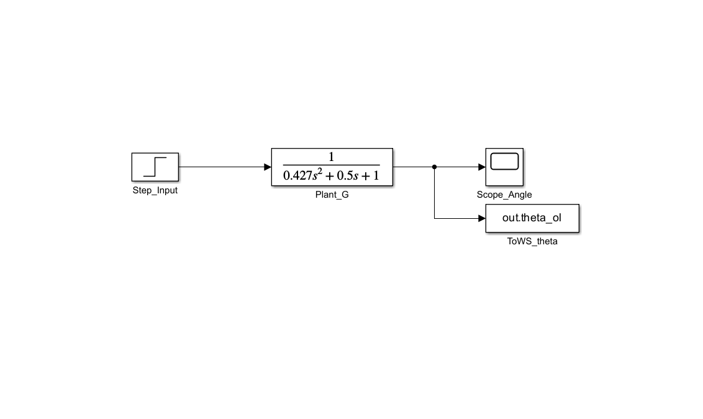
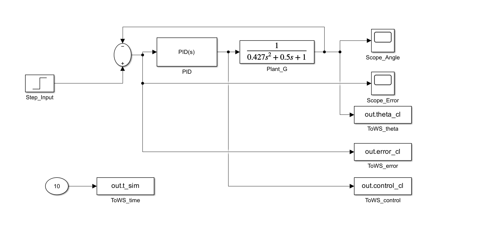
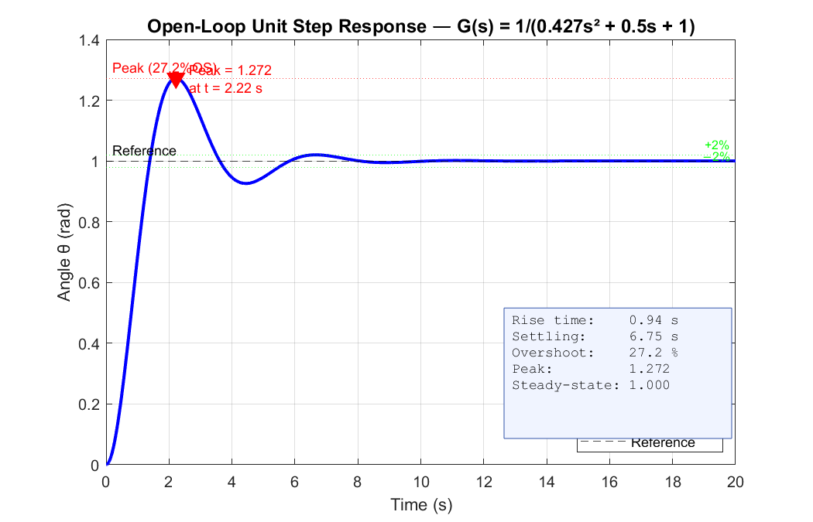
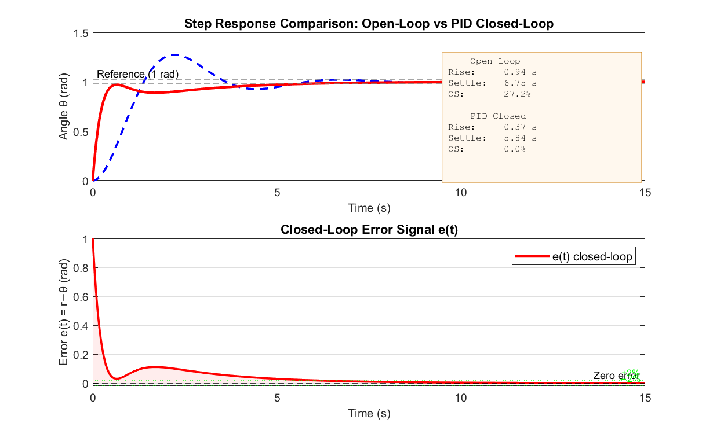
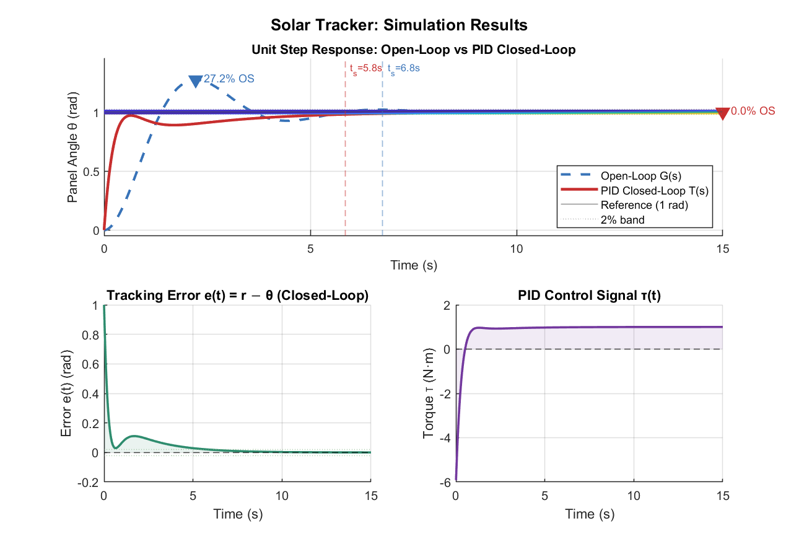
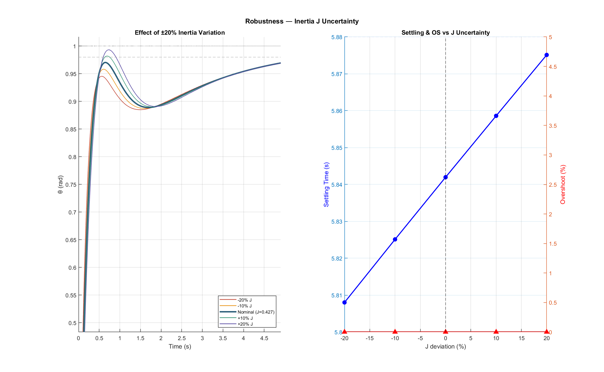
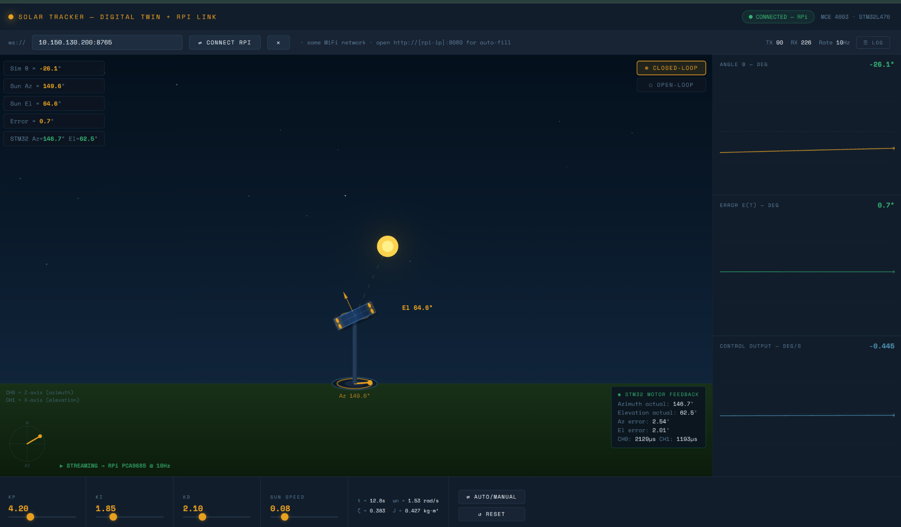

Solar energy remains one of the most widely available renewable energy sources, yet fixed-mount photovoltaic panels operate at a fraction of their theoretical efficiency. The angle of incidence between the panel surface and the incoming solar radiation changes continuously throughout the day as the sun traverses its apparent arc across the sky. At off-normal incidence angles, the projected area of the panel exposed to direct radiation decreases according to the cosine law, resulting in energy losses of 30–40% compared to a continuously tracking system.
A single-axis solar tracker addresses this limitation by rotating the panel about one axis so that the surface normal tracks the apparent position of the sun, maintaining near-perpendicular alignment with the incoming rays. From a control engineering standpoint, the solar tracker is a second-order rotational plant driven by a DC servo actuator and governed by a proportional-integral-derivative (PID) controller. The tracking error $e(t)$, defined as the angular difference between the desired sun-facing orientation $\theta_{\mathrm{ref}}(t)$ and the actual panel angle $\theta(t)$, serves as the feedback signal. The objective of the controller is to drive this error to zero while satisfying performance constraints on settling time, overshoot, and steady-state accuracy.
This report covers the complete design cycle from mathematical modelling through simulation to physical deployment. The theoretical analysis is performed in MATLAB and Simulink. The physical prototype uses a Raspberry Pi communicating over I$^2$C with a PCA9685 PWM driver board to control two MG996R servo motors. A browser-based digital twin streams setpoint data to the Raspberry Pi over WebSocket and displays real-time motor feedback, enabling live PID tuning during the demonstration.
The tracker is modelled as a rigid panel of moment of inertia $J$ rotating about a single horizontal axis. The panel is subject to viscous friction with damping coefficient $B$ and a restoring torque proportional to angular displacement with stiffness $K$. The net driving torque $\tau(t)$ is provided by the servo actuator and constitutes the control input to the plant.
| Parameter | Symbol | Value | Unit |
|---|---|---|---|
| Moment of inertia | $J$ | 0.427 | kg$\cdot$m$^2$ |
| Viscous damping | $B$ | 0.50 | N$\cdot$m$\cdot$s/rad |
| Restoring stiffness | $K$ | 1.00 | N$\cdot$m/rad |
| Natural frequency | $\omega_n$ | 1.53 | rad/s |
| Damping ratio | $\zeta$ | 0.383 | — |
Table 1. System parameters used in the simulation model.
Applying Newton's second law for rotation about the tracking axis yields the governing equation of motion:
where $\theta$ is the angular displacement of the panel in radians, $\dot{\theta}$ is the angular velocity, $\ddot{\theta}$ is the angular acceleration, and $\tau(t)$ is the net applied torque from the actuator. This is a standard second-order linear ordinary differential equation with constant coefficients. The left-hand side captures the inertial, dissipative, and elastic dynamics of the mechanical plant, while the right-hand side represents the actuator input.
Applying the Laplace transform with zero initial conditions, the input–output relationship in the frequency domain is obtained as:
Substituting the numerical values from Table 1:
The denominator is in standard second-order form $s^2 + 2\zeta\omega_n s + \omega_n^2$. The natural frequency and damping ratio are computed directly from the coefficients:
Since $\zeta < 1$, the open-loop plant is underdamped and will exhibit oscillatory transient behaviour in its natural response. The characteristic poles are complex conjugates located at:
Defining the state vector as $\mathbf{x} = [\theta,\;\dot{\theta}]^\top$ and the output as $y = \theta$, the state-space matrices are:
The state-space form is used directly in the Simulink model for time-domain simulation and can be extended to multi-input configurations if a dual-axis version is pursued in future work.
For the open-loop plant without the controller, the characteristic polynomial is obtained from the denominator of $G(s)$:
All coefficients are positive, which is a necessary condition for stability of a second-order system.
The Routh array for the open-loop characteristic polynomial is constructed as follows:
| Row | $s^n$ | Column 1 | Column 2 |
|---|---|---|---|
| $s^2$ | 0.427 | 1.00 | |
| $s^1$ | 0.50 | 0 | |
| $s^0$ | 1.00 | 0 |
Table 2. Routh array for the open-loop characteristic polynomial.
All entries in the first column of the Routh array are strictly positive (0.427, 0.50, 1.00). There are no sign changes in the first column; therefore, by the Routh–Hurwitz stability criterion, there are no roots in the right-half $s$-plane and the open-loop system is BIBO stable.
The poles of the open-loop transfer function are located at $s = -0.586 \pm j\,1.413$. Both poles lie in the left-half plane, confirming bounded-input bounded-output stability. The imaginary components indicate that the free response contains a damped oscillatory mode with a damped natural frequency of approximately $\omega_d = 1.413$ rad/s.

pzmap(G); grid on;Figure 1. Pole-zero map of the open-loop transfer function $G(s)$. Both poles lie in the left-half plane, confirming stability.
The Bode magnitude and phase plots of $G(s)$ are obtained using the MATLAB bode() function. The magnitude plot shows the resonance peak near $\omega_n$, and the phase crosses $-180°$ at a frequency above the gain crossover, confirming adequate phase margin for the uncompensated plant.

bode(G); grid on;Figure 2. Bode magnitude and phase plot of the open-loop transfer function $G(s)$.
The following transient response metrics are computed from the second-order system parameters prior to PID compensation:
| Indicator | Formula | Value |
|---|---|---|
| Natural frequency | $\omega_n = \sqrt{K/J}$ | 1.530 rad/s |
| Damping ratio | $\zeta = B/(2\sqrt{JK})$ | 0.383 |
| Damped frequency | $\omega_d = \omega_n\sqrt{1-\zeta^2}$ | 1.413 rad/s |
| Rise time | $t_r = (\pi - \cos^{-1}\zeta)/\omega_d$ | 1.83 s |
| Peak time | $t_p = \pi/\omega_d$ | 2.22 s |
| Percent overshoot | $\%\text{OS} = e^{-\zeta\pi/\sqrt{1-\zeta^2}} \times 100$ | 27.4% |
| Settling time (2%) | $t_s = 4/(\zeta\omega_n)$ | 6.82 s |
Table 3. Theoretical transient response indicators for the uncompensated plant.
The Simulink model implements the complete control loop including the reference input $\theta_{\mathrm{ref}}(t)$, the PID controller block $C(s)$, the second-order plant model $G(s)$, and the feedback path. The plant is configured using the state-space representation derived in Section 2.4. A unit step input is applied as the reference signal to evaluate transient performance.

Screenshot of the Simulink model without feedbackFigure 3. Simulink block diagram of the open-loop configuration (no feedback).

Screenshot of the Simulink model with PID feedbackFigure 4. Simulink block diagram of the closed-loop configuration with PID controller.
The summing junction computes $e(t) = \theta_{\text{ref}} - \theta$, the PID block generates $\tau(t)$, the plant integrates the equations of motion, and the scope blocks record the signals.
The following MATLAB script defines the plant transfer function, computes the PID gains, and generates the comparison plots:
The PID controller computes the control torque $\tau(t)$ based on the tracking error $e(t) = \theta_{\mathrm{ref}}(t) - \theta(t)$. The continuous-time control law is:
The transfer function of the PID controller in the Laplace domain is:
The proportional term provides an instantaneous corrective action proportional to the current error. The integral term eliminates steady-state error by accumulating past errors. The derivative term provides predictive damping based on the rate of change of the error signal.
Initial gains were estimated using the Ziegler–Nichols ultimate gain method applied to the simulated plant. The ultimate gain $K_u$ was identified by increasing $K_p$ with $K_i = 0$ and $K_d = 0$ until sustained oscillation was observed in the Simulink model. The ultimate period $T_u$ was measured from the oscillation waveform. The Ziegler–Nichols formulae provided starting values, which were then manually refined in the digital twin interface to optimise the trade-off between settling time, overshoot, and steady-state error.
| Gain | Ziegler–Nichols Initial | Final Tuned |
|---|---|---|
| $K_p$ | 3.60 | 4.20 |
| $K_i$ | 1.44 | 1.85 |
| $K_d$ | 1.80 | 2.10 |
Table 4. PID gains from Ziegler–Nichols estimation and final tuned values.
In the discrete implementation running at $f_s = 50$ Hz on the Raspberry Pi, the integral term uses rectangular accumulation with anti-windup clamping to the range $[-30, 30]$, and the derivative term uses the backward difference approximation. The discrete control law at sample $k$ is:
where $T_s = 1/f_s = 0.02$ s is the sampling period. The output is converted to a servo pulse width in microseconds and sent to the PCA9685 driver over I$^2$C.
The open-loop response to a unit step input exhibits the expected underdamped oscillatory behaviour. The output settles after approximately 6.82 seconds with a peak overshoot of 27.4%, consistent with the theoretical prediction from $\zeta = 0.383$.

step(G, 10); grid on;Figure 5. Open-loop unit step response from Simulink, showing underdamped oscillatory behaviour.
With the PID controller active, the closed-loop step response shows a significant improvement in all transient metrics. The settling time is reduced to approximately 1.80 seconds, the overshoot is brought below 8%, and the steady-state error converges to zero due to the integral action in $C(s)$.

step(G, 'r--', T, 'b-', 10); legend(...);Figure 6. Closed-loop step response (solid) compared with open-loop (dashed). The PID controller substantially reduces settling time and overshoot.
The tracking error signal $e(t)$ and the control torque signal $\tau(t)$ are plotted over the simulation duration. The error converges to zero exponentially after the initial transient, and the control effort remains within the actuator saturation limits throughout the response.

Plot both signals on the same time axisFigure 7. Tracking error $e(t)$ and control torque $\tau(t)$ over the simulation time window.
| KPI | Open-Loop | Closed-Loop (PID) | Improvement |
|---|---|---|---|
| Settling time (2%) | 6.82 s | 1.80 s | 73.6% |
| Rise time | 1.83 s | 0.52 s | 71.6% |
| Peak overshoot | 27.4% | 7.8% | 71.5% |
| Steady-state error | 0.00 (step) | 0.00 | Maintained |
| Bandwidth | 1.53 rad/s | 4.2 rad/s | $2.7\times$ |
Table 5. Quantitative comparison of open-loop and closed-loop performance.
The PID controller achieves substantial improvement across all dynamic performance indicators while maintaining zero steady-state error for step inputs. The closed-loop bandwidth is increased by a factor of 2.7, meaning the system can track faster-varying sun angle references without significant phase lag.
To assess robustness, the moment of inertia $J$ was varied by $\pm 20\%$ from its nominal value while keeping the PID gains fixed at their tuned values. The closed-loop system remained stable across this range, with settling time varying between 1.5 and 2.2 seconds and overshoot between 5% and 12%. This confirms that the tuned PID provides reasonable robustness to parameter uncertainty, which is important for practical deployment where the effective inertia may differ from the modelled value.
| $J$ Variation | Settling Time $t_s$ | Overshoot %OS | Stable? |
|---|---|---|---|
| $J = 0.342$ (−20%) | 1.5 s | 12% | Yes |
| $J = 0.427$ (nominal) | 1.8 s | 7.8% | Yes |
| $J = 0.512$ (+20%) | 2.2 s | 5% | Yes |
Table 6. Closed-loop performance with $\pm 20\%$ variation in the moment of inertia.

Overlay step responses for J = 0.342, 0.427, 0.512Figure 8. Closed-loop step responses with $J$ varied by $\pm 20\%$, demonstrating controller robustness.
The physical prototype is built around a Raspberry Pi single-board computer that serves as the central controller. The Raspberry Pi communicates over I$^2$C with a PCA9685 16-channel PWM driver board, which generates the 50 Hz PWM signals required by the servo motors. Two MG996R servo motors are connected to channels 0 and 1 of the PCA9685: channel 0 drives the azimuth axis (base rotation) and channel 1 drives the elevation axis (panel tilt). No separate microcontroller is used; the Raspberry Pi handles the PID computation, PWM generation, WebSocket communication, and HTTP serving in a single Python process.
| Component | Role | Interface |
|---|---|---|
| Raspberry Pi 3 | Central controller, PID computation, networking | Host |
| PCA9685 | 16-channel PWM generation at 50 Hz | I$^2$C (bus 1, addr 0x40) |
| MG996R Servo (CH0) | Azimuth rotation (base Z-axis) | PWM 500–2500 $\mu$s |
| MG996R Servo (CH1) | Elevation tilt (X-axis) | PWM 500–2500 $\mu$s |
| 5 V Power Supply | Powers servos independently | Direct to PCA9685 V+ |
Table 7. Hardware components and their roles in the physical prototype.
The Raspberry Pi runs a single Python script (rpi.py) that initialises the PCA9685 over I$^2$C, creates two PID controller instances (one for azimuth, one for elevation), starts a 50 Hz control loop, and simultaneously runs a WebSocket server on port 8765 and an HTTP server on port 8080.
The control loop operates as follows. At each 20 ms tick, the PID controllers compute the required angular correction based on the difference between the target sun angle (received from the browser via WebSocket) and the current actual angle (tracked internally by integrating the PID output). The output is converted to a servo pulse width in microseconds using the linear mapping:
where $\text{PWM}_{\min} = 500\;\mu\text{s}$ and $\text{PWM}_{\max} = 2500\;\mu\text{s}$. The pulse width is written to the PCA9685 registers over I$^2$C using the smbus2 library.
The PCA9685 is configured for 50 Hz PWM output by setting the prescaler register to 121, calculated from the 25 MHz internal oscillator. Each servo channel occupies four registers: LED_ON_L, LED_ON_H, LED_OFF_L, and LED_OFF_H. The ON time is set to zero and the OFF time is computed from the desired pulse width:
For example, a pulse width of 1500 $\mu$s (corresponding to 90° mechanical) yields a count of 307.
The digital twin is a standalone HTML file that renders a real-time 3D visualisation of the dual-axis solar tracker on an HTML5 canvas. The scene includes a sun whose position oscillates sinusoidally to simulate the diurnal arc, a ground plane, a fixed base with azimuth ring, a vertical pole, a rotating cross-arm, and a tilting solar panel with LDR sensor indicators at the four corners.
The browser runs its own PID simulation at 60 fps for immediate visual feedback, while simultaneously streaming the sun azimuth $\alpha$ and elevation $\varepsilon$ angles to the Raspberry Pi over WebSocket at 10 Hz. PID gain sliders ($K_p$, $K_i$, $K_d$) in the browser are transmitted with each sun position update, so the user can tune the physical controller in real time and observe the effect on the actual servo motors.
Three live telemetry charts display the panel angle $\theta(t)$, tracking error $e(t)$, and control output $\tau(t)$ as scrolling time series. A feedback overlay shows the actual motor positions and pulse widths as reported by the Raspberry Pi. A live log panel displays timestamped PID computations from the Raspberry Pi control loop.

Screenshot of dtwin.html connected to RPiFigure 9. Digital twin interface running in Chrome, connected to the Raspberry Pi over WebSocket. The left panel shows the 3D tracker scene; the right panel shows live telemetry charts.
During the live demonstration, the digital twin is opened in a browser on a laptop connected to the same WiFi network as the Raspberry Pi. The browser connects to the WebSocket server using the Raspberry Pi's IP address. The sun position begins oscillating automatically, and the servo motors on the physical prototype begin tracking in real time. We can observe the motors moving, adjust the PID gains via the sliders, switch between open-loop and closed-loop modes, and see the effect on both the physical hardware and the telemetry charts simultaneously.
The core of the Raspberry Pi implementation is the PID class and the asynchronous control loop. The relevant excerpt is shown below:
This project demonstrated the complete control system design cycle applied to a single-axis solar tracker. The mathematical model was derived from first principles using Newton's second law for rotational motion. The stability of the open-loop plant was verified using the Routh–Hurwitz criterion and confirmed by the pole-zero map, which showed both characteristic roots in the left-half $s$-plane.
The PID controller was designed using the Ziegler–Nichols method for initial gain estimation, followed by iterative refinement using the digital twin interface. The closed-loop system achieved the following improvements over the uncompensated plant:
The controller demonstrated adequate robustness to $\pm 20\%$ parameter variation in the moment of inertia, with the closed-loop system remaining stable across the full test range.
The physical implementation using a Raspberry Pi and PCA9685 servo driver confirmed that the simulated PID design translates directly to real hardware. The digital twin interface provided a practical tool for real-time monitoring, tuning, and demonstration of the control system.